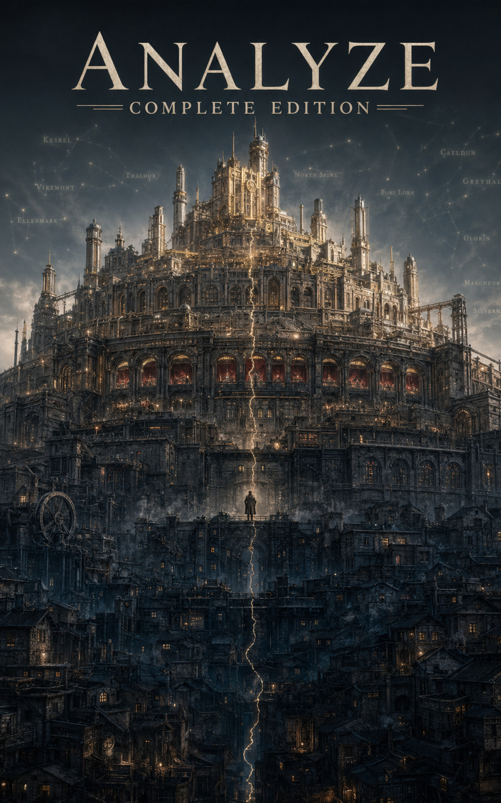

Analyze
Seven volumes. Same world, finer grain.
A seven-volume light novel adaptation of the Level Zero trilogy. More scene texture, illustrations, cast material, and reader breathing room. For readers who want to inhabit the world, not just trace its argument.
Seven-Volume Series
Analyze retells the Level Zero trilogy at a different level of magnification. Where the trilogy makes the institutional argument, Analyze lives in the scene, the breath, the moment before Rowan decides. The full series is a complete edition of the adaptation.
Volume 1
The lower yard. The first ranking day. What Analyze actually sees when it reads.
Volume 2
Sera Quill enters. The network of the unranked takes shape.
Volume 3
The civic scripts of Wardspire. Rowan reads the system's skeleton.
Volume 4
The ladder breaks here. The argument sharpens.
Volume 5
The cost of reading clearly in a system that punishes it.
Volume 6
The decision before the decision. Rowan's last reading.
Volume 7
The final volume. The rewrite or the cost.